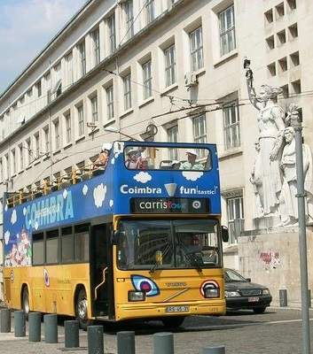

Coimbra oferece diversos meios de transporte para que a sua visita na cidade seja ainda mais inesquecível !
SERVIÇOS MUNICIPALIZADOS DE TRANSPORTES URBANOS DE COIMBRA - SMTUC
Os Serviços Municipalizados de Transportes Urbanos de Coimbra (SMTUC) são os responsáveis pela gestão da rede de autocarros e troleicarros e de um elevador público no concelho de Coimbra, Portugal.
Os serviços SMTUC disponibiliza cerca de 50 linhas com diversos horários dentro de toda a cidade.
Este serviço dá ao público a possibilidade de conhecer esses horários através de uma aplicação ou no próprio site do SMTUC.
Um passeio "marítimo" pelo rio mondego feito pelo famoso barco, que permite ter uma vista fabulosa da grande cidade dos estudantes, Coimbra!

"Bus Funtastic"
Coimbra tem ainda mais encanto, percorrida num autocarro turístico, o Funtastic! Uma viagem panorâmica, num autocarro aberto de dois pisos, que passa pelos locais mais belos da cidade de Coimbra entre os seus miradouros e pontos históricos.
Este passeio dispõe de informações gravadas em Português, Inglês, Espanhol, Alemão, Italiano e Francês com duração de uma hora.
Horário:
De terça a domingo com partidas às: 10h00 | 11h00 | 12h00 | 15h00 | 16h00 | 17h00
Os bilhetes podem ser adquiridos nos hotéis da cidade, nos postos de turismo, na Universidade de Coimbra, nas lojas SMTUC, no Edifício Chiado, na Casa Municipal da Cultura e, naturalmente, a bordo do Funtastic. Os bilhetes ainda dão acesso aos Museus Municipais (Edifício Chiado, Torre de Almedina e Posto de Turismo da Portagem), sem qualquer encargo adicional.
 Horário:
Horário:  Cáis do Parque Dr. Manuel Braga
Cáis do Parque Dr. Manuel Braga
 E-mail: info@odabarca.com
E-mail: info@odabarca.com